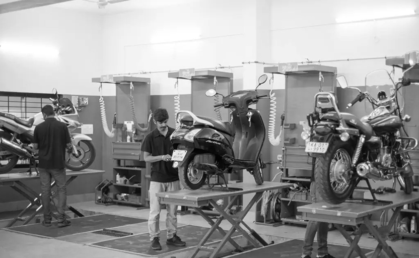
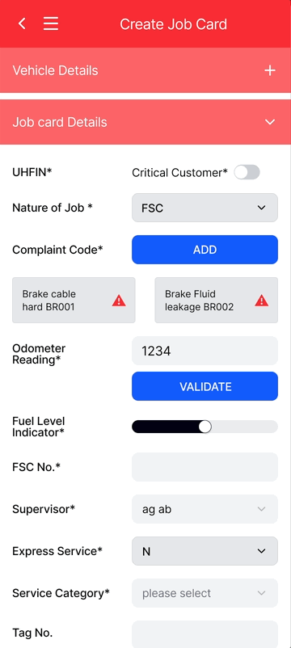
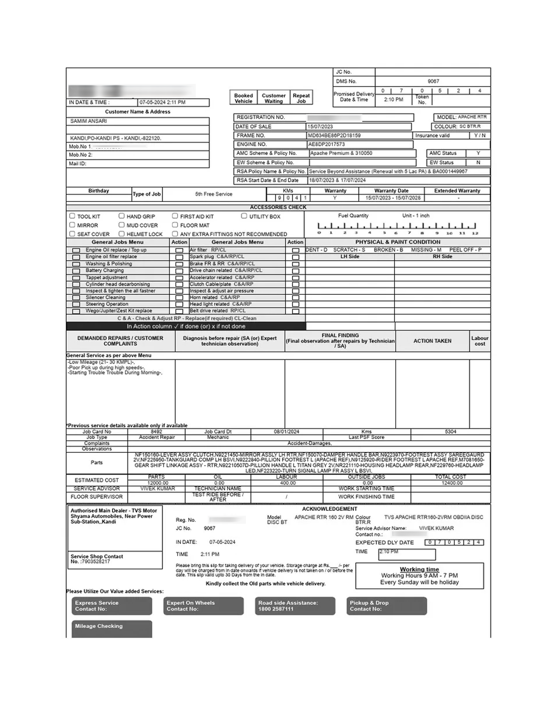
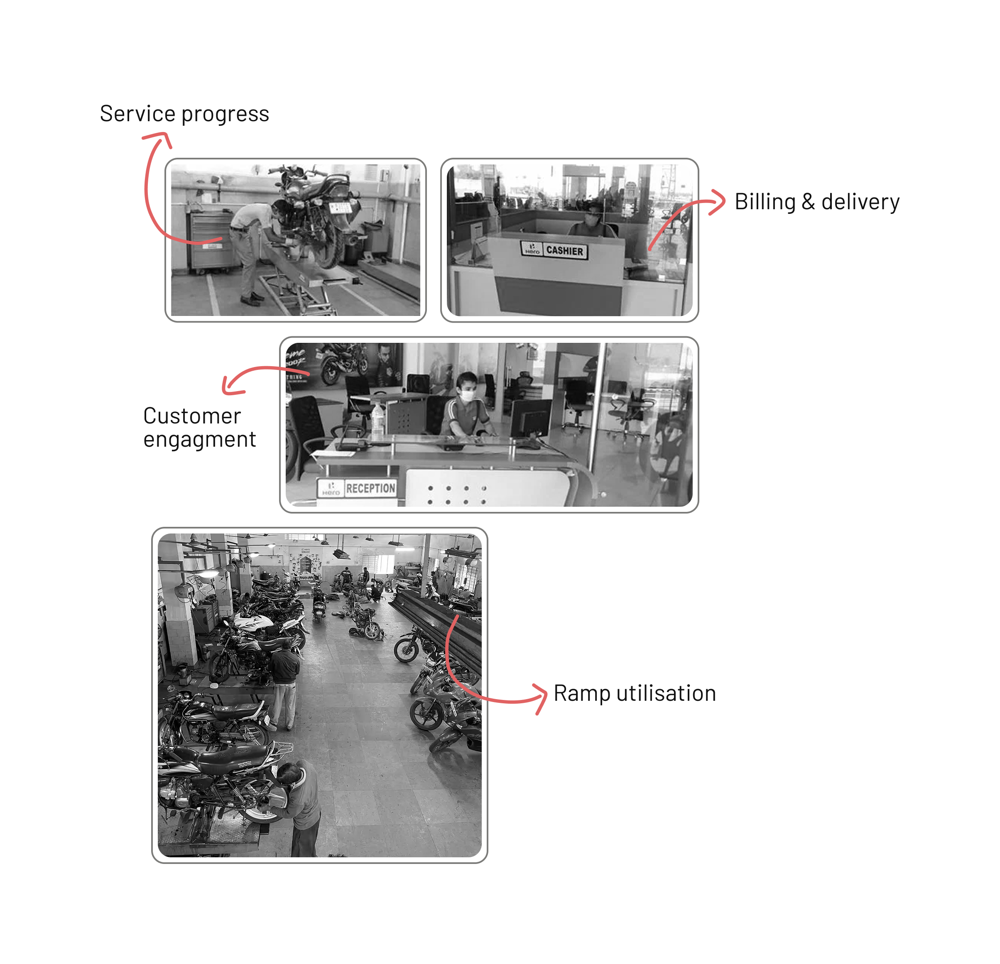
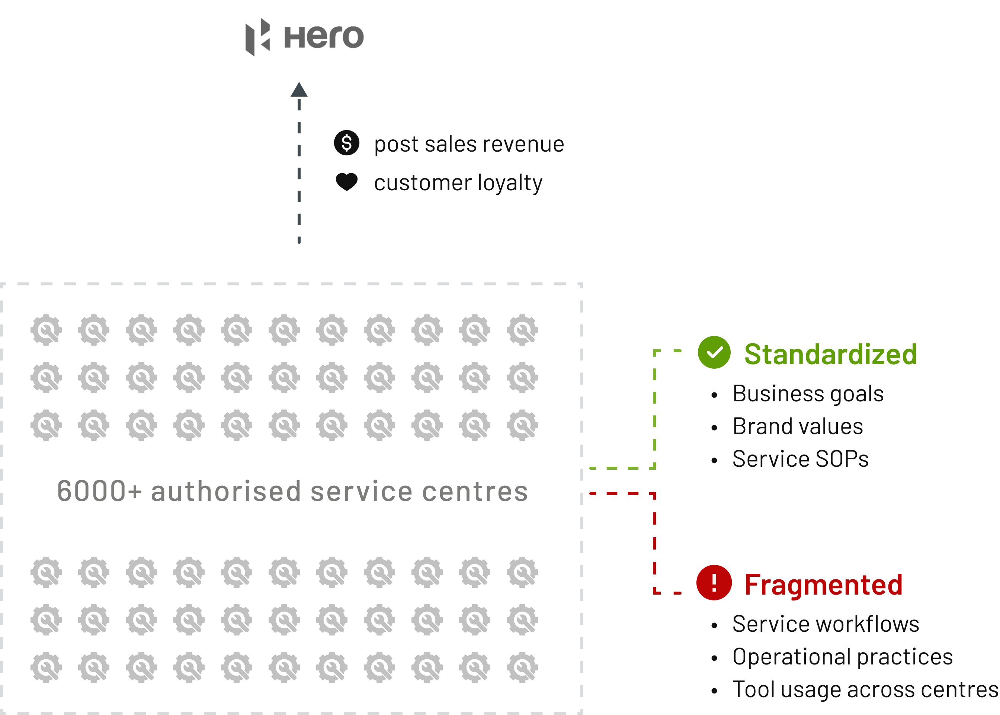
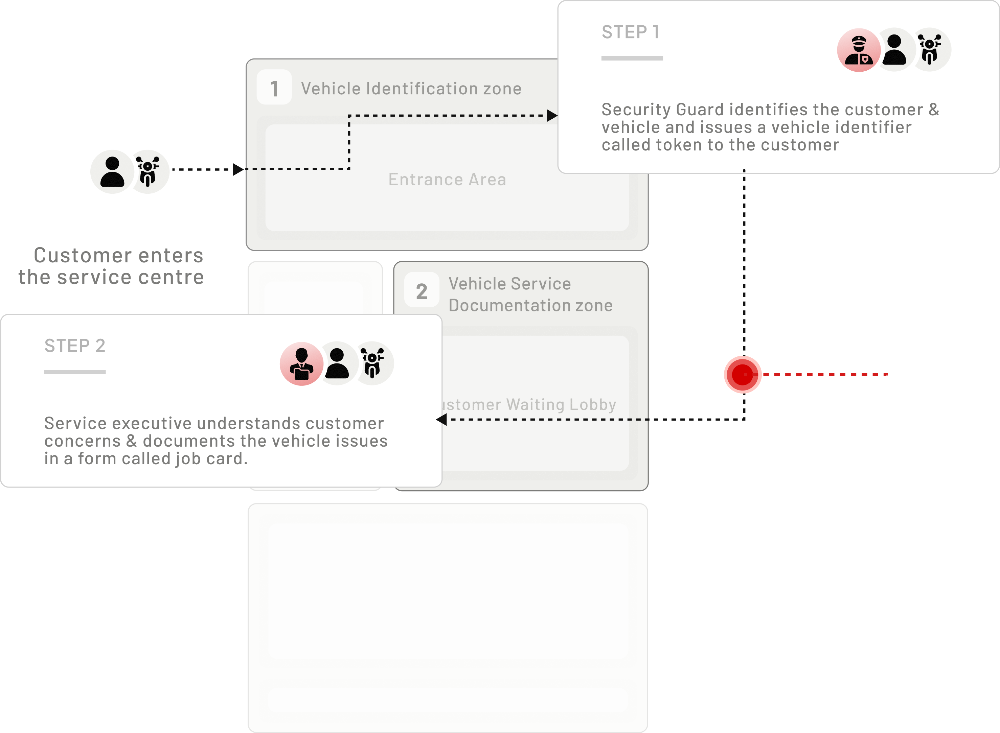
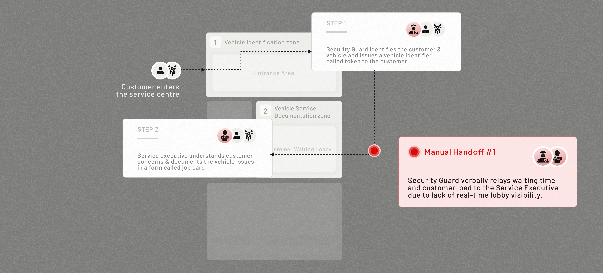
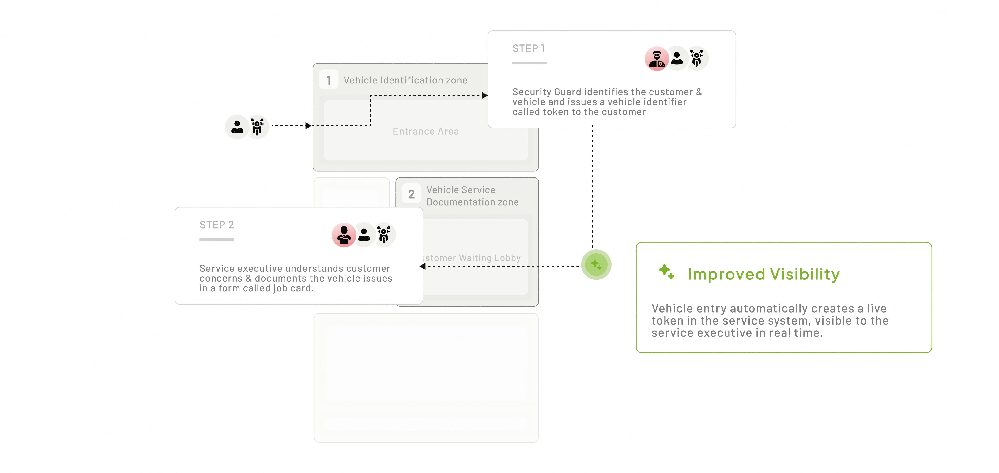
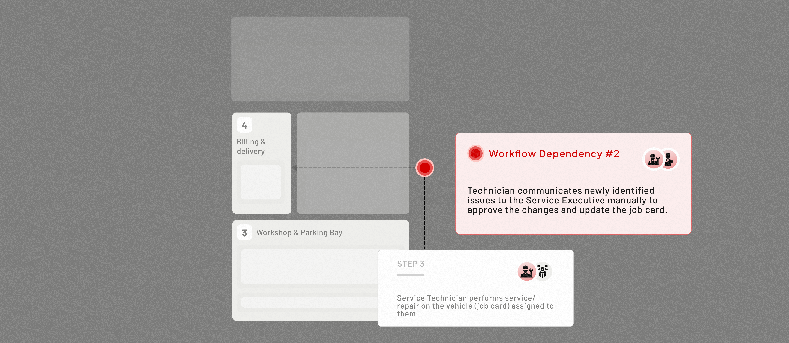

Vehicle Service Management Tool
Integrating Two-Wheeler Vehicle Service Workflows for Optimal Operations and Faster Delivery
Background
Two-wheeler vehicle service centre management relied heavily on manual information handoffs between service staff, creating workflow dependencies that result in late service deliveries.


The late service deliveries impacted businesses of the two-wheeler vehicle service centres.
Loss of Daily Service Revenue
INDICATOR: REDUCED RAMP UTILISATION
Customer Dissatisfaction
INDICATOR: LOW CUSTOMER SATIFACTION INDEX
Identified Problem
Through a combination of primary and secondary research methods, we identified that root cause of workflow dependencies and late service deliveries,
Service Workflow
Workflow dependencies emerged due to the absence of shared, real-time visibility amongst service staff.
Service Management Tool
Interactions & interface elements were outdated and failed to assist the service staff with real-time operations.
BEFORE
Unstructured form for vehicle issues documentation (job card)
Poor information architecture and lack of field grouping created a long, unstructured form with no contextual summary of user input.
For example: Frequently edited fields like “Supervisor” required repeated vertical navigation, increasing interaction cost and cognitive load.

AFTER
Multi-step (job card) form with contextual feedback
Implemented a guided navigation with contextual progress indicators, grouping information, and a clear hierarchy.
For example: Frequently edited fields like “Critical Job card” and “Supervisor” were made sticky at the top for constant accessibility.
BEFORE
Paper job cards preferred over digital interface
Service technicians relied on printed job cards because they supported quick scanning and task tracking during vehicle repairs.

AFTER
Checklist-like interface for Service Technicians
The redesigned experience converts job cards into a digital checklist optimized for in-workshop use, with touch-friendly interactions and persistent access to supporting tools for efficient task completion and documentation.
BEFORE
Manual, Visual Tracking of Service Operations
Vehicles’ status across workshops, parking bays, and customer waiting areas was managed manually, relying on service employee to constantly monitor activity on the floor.
For example: There was no clear visibility into how many customers were waiting or which vehicles required immediate attention.

AFTER
Real-Time Visibility into Service Operations
A centralized dashboard provides real-time visibility into key stages of vehicle and customer status across the service centre, enabling service teams to respond and manage work effectively.
For example: Critical states like Waiting, Ongoing, Pending, and Billing help teams take timely action.
PROJECTED IMPACT
5–10%
increase in daily vehicle service capacity.
10–20%
improvement in on-time vehicle service deliveries.
~3 minutes
70% reduction in job card creation time, from 8–10 mins to ~3 mins.
DEEP DIVE / 01 BUSINESS CONTEXT

A systemic challenge: standardized intent, fragmented execution
Hero MotoCorp operates a large service network through independent dealerships. While business goals and SOPs are standardized, operations were inconsistent.
At scale, these fragmented workflows led to late service deliveries and reduced customer satisfaction.
Understanding the Service Centre Layout
To learn where and why these fragmentations happen, we studied the service centre layout and ecosystem
SERVICE CENTRE ZONES
[Job Card Creation]
We learnt that,
Each vehicle movement between service centre zones triggered manual information handoffs.
These handoffs introduced workflow dependencies which in scale, led to service delays.
Understanding the key users & vehicle movements
To learn why these fragmentations happen, we studied the actors involved in the service centre ecosystem

We learnt that,
Manual handoffs emerged due to the absence of shared, real-time visibility across roles.
Without a common view of vehicle status and service progress, employees relied on ad-hoc communication to bridge gaps — often leading to delays and inaccuracies.
Security Guard verbally relays waiting time and customer load to the Service Executive due to lack of real-time lobby visibility.
Service Technician communicates newly identified issues to the Service Executive manually because the job card is not updated in real time.
Understanding how key users perceived the management tool
We conducted 5 SME interviews, this allowed us to identify critical pain points from the perspective of experienced Hero MotoCorp service professionals.
Post-creation changes to job cards introduced approval bottlenecks.
Because job cards were created with inaccurate information due to lack of visibility, even minor updates required manual approvals from service executives, adding wait time and delaying service progress.
Critical operational visibility was concentrated with Service Executive.
Service Executive - single person behind keeping track of workshop ramp utilisation, customer engagement, approvals and service deliveries.
Evaluating the Current Service Management Tool
To effectively frame our design strategy, we evaluated the current state of the tool to understand the usability issues and design limitations.
Vehicle Service documentation Form
[Job Card Page]
OLD DESIGN
Most used page by the Service executive, to perform their critical task of understanding and documenting vehicle issues and customer concerns.

Dynamic fields are hard to access; becomes a prolonged task to complete. Service Executive loses time on menial document changes.
“Supervisor” field is nested in the long form, which requires the service executive to scroll vertically to find the field.
Upcoming bookings
[Page]
OLD DESIGN
Most used page by the Security Guard — to identify the vehicle and customer (appointment) upon entry to service centre.

No Visual hierarchy or prioritisation, makes for Security Guard to read and not skim. Task of identification & verification is prolonged.
Gained pivotal insight
By sharing the findings with stakeholders - product owners, subject matter experts, we learnt an insight that wouldn’t have been discovered otherwise.
Technicians preferred printed job cards for ease of use and manual task management
Technicians found printed job cards more accessible for checking tasks and tracking progress compared to the current job card interface.
Design Strategy
Through combination of secondary and primary research methods, we devised the design strategy for the solution phase
Design for Efficiency
Keywords:
SERVICE WORKFLOW
How might we facilitate seamless information handoffs amongst service staff to enable on-time vehicle deliveries??
SERVICE MANAGEMENT TOOL
How might we provide real-time operational visibility to support faster decisions and improve on-time vehicle deliveries?
Building foundations for the re-design of service management tool
Before designing the UI, We restructured the operational task flows to reduce manual dependencies and increase system-driven visibility.
Manual handoffs between Security Guard and Service Executive about Customer status.
BEFORE
Improved visibility to customer status (~ service operations)
AFTER
Rationale?
Service executives can see how many tokens have been issued and the waiting time for each customer, enabling better task prioritisation and faster response.
Technicians could not proceed unless the service executive updated the job card, creating a dependency bottleneck
BEFORE
Technicians don't have to wait for manual communication & verbal approvals
AFTER
Rationale?
Redesign removes dependency between roles, enabling parallel task progression. It reduces idle technician time and improves overall service throughput.
Translating workflows into interfaces
As we restructured service workflows, we learnt that each role operates in a distinct physical environment (zones) with its own limitations influencing how and when they interact with the system.
Designing for
real-world service environments
We created role-specific interaction surfaces that align with how each role moves, works, and makes decisions in the service environment.
Sketching Concepts and Low-fi wireframes
We translated research insights into early visual explorations to quickly test layout directions, information hierarchy, and task grouping.
Low-fidelity wireframes allowed us to focus on structure and workflow logic without being distracted by visual design.


Evolution from initial paper sketches exploring layout concepts to digital low-fidelity structural flows.
Iterations & Concept Validation
We tested the our concepts against real operational scenarios and live data patterns to understand how the design behaves across varying service loads and contexts.
Remote Walkthroughs
Structured reviews / Concept Testing
Subject Matter Experts, Product, and Engineering teams
Iteration 1
Prioritising Critical Delay Touch points
We prioritized Tokens and Approvals over “Billing” and Inspection, because these were the operational bottlenecks.
If the blockers like Waiting Tokens or Approvals aren't cleared first, the entire service pipeline stalls.

Dashboard lacked adaptive guidance across different operational states. During low-traffic periods (no new tokens), the interface lost relevance, offering visibility without decision support.
High-volume conditions exposed interaction cost issues. Retrieval of tokens became time-intensive, forcing Service Executives to manually choose between online and walk-in queues under time pressure.
Priority in service operations is time- and context-driven, not status-driven. The same job card may shift in urgency depending on time of day, customer presence, and workload, making static job card status labels ineffective for decision-making.
Iteration Improvements

Iteration 1
Followed a visibility-first approach but lacked contextual orchestration. Multiple operational contexts (tokens, approvals, inspections) coexisted on one surface, requiring Service Executives to constantly interpret relevance.

Final Iteration
Context-driven operational workspace that reduces decision friction and aligns with how Service Executives actually prioritise work. Search and filters further reduce retrieval friction.
Final Designs
The culmination of our research and testing: a suite of tools designed to synchronise the physical and digital workflows of the service centre.

Dashboard of customer and vehicles’ status in the vehicle centre
Four important stages Waiting, Ongoing, Pending, Billing jobs are the key metrics to keep track of operations in vehicle centre.
Push notification and critical alerts enable prioritisation and effective management.
Alerts about delays, prolonged customer waiting, ready to bill job cards allow executives to act proactively rather than reactively.


Multi-step form with contextual feedback
A guided navigation with contextual progress indicators, grouping information, and a clear hierarchy.
For example — changing fields like "Critical Job card" and "supervisor" were made sticky at the top for constant accessibility.
Checklist-like interface for service Technicians
Updated job-card layout for service technicians use with checklist UI, touch-friendly interactions and help & documentation features.
For example: Supporting tools like "Help" & documentation are provided with persistent access.